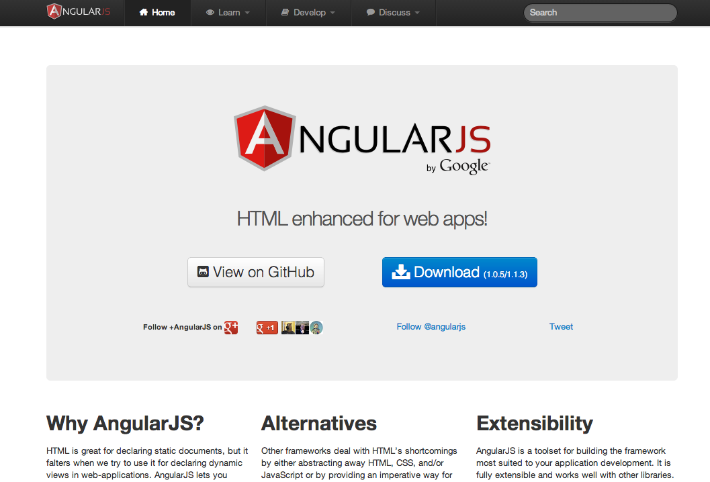
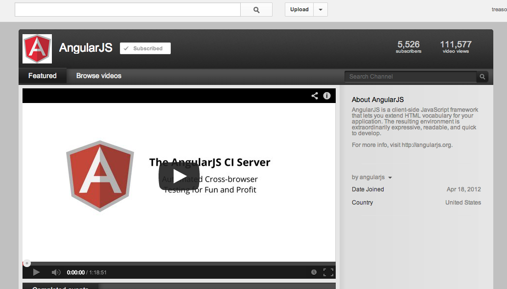
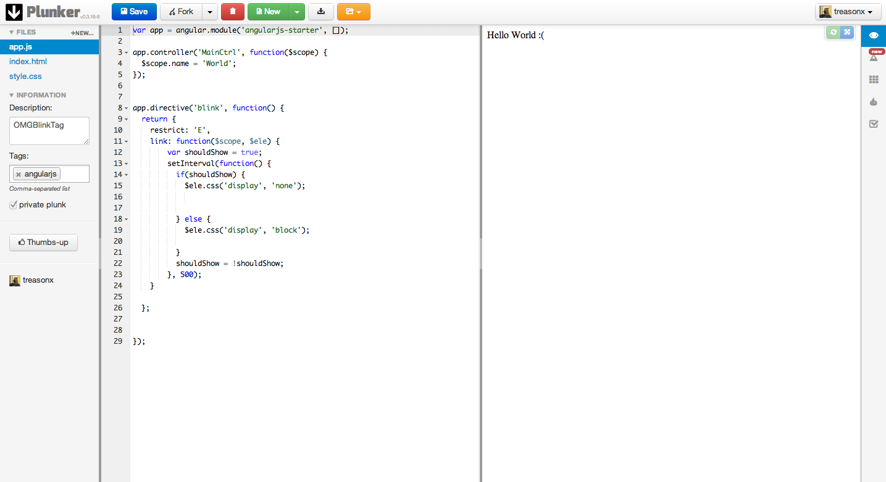
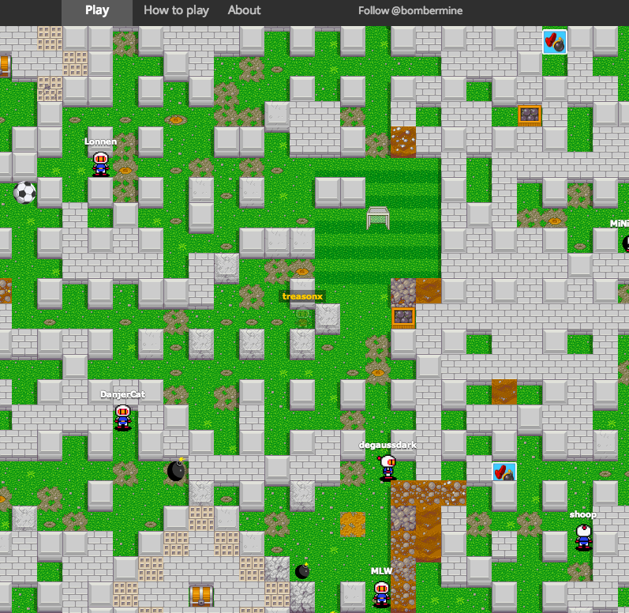

getting started with angularjs
+James Morrin

Where do I begin?

How is angular different?
- Full testing story
- Two way data bindings
- Dependency Injection
- Teach HTML new tricks
Use the Scope!
Simple Scope Demo
What is the scope?
- The "backbone" of your application
- provides data to the views
- acts as a pubsub
- observes changes and notifies views
Controllers
Scope Life cycle
Scope Life Cycle Demo
Scope Inheritance
Pubsub on the Scope!
Tips
- Dont fight angular
- Look through the source
- TDD
- Baby Steps
- Embrace the scope
- Directives are not the answer
Resources!
The Official Docs
But.....
They kinda suck!
The advantage of transclusion is that the linking function receives a transclusion function which is pre-bound to the correct scope. In a typical setup the widget creates an isolate scope, but the transclusion is not a child, but a sibling of the isolate scope. This makes it possible for the widget to have private state, and the transclusion to be bound to the parent (pre-isolate) scope.
WAT?
Video Resources
Code Examples

Yeoman.io

The Source

And one more thing...
The Angular Batarang!
Bombermine
Coming in future episodes...
- Directives
- Dependency Injection
- Modules
- Services
- Routing
- Testing!
- Angular with other Libraries
THANKS!
bit.ly/introToAngulargithub.com/treasonx